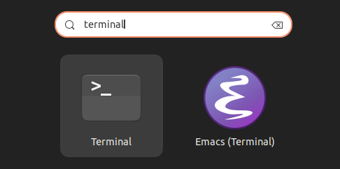
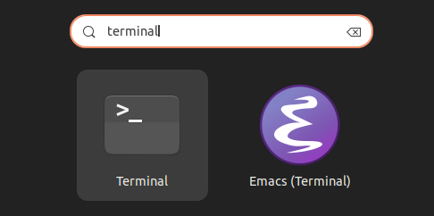

Linux-Shell-Introduction
What is the Linux-Shell?
The linux-shell is a component of the "gnu/linux"-os (operating-system), which is the outermost part of the os and could therefore be called the: "interface" of the os.
"gnu/linux" is normally composed of the following parts:
- Hardware
- Kernel
- Shell
- CLI/GUI
- Applications
Hardware and kernel can only be accessed through the interface of the shell.
And as shown through the seventh list-element, the shell can either be accessed through a cli (command-line-interface), or a gui (graphical user-interface).
The "gnu/linux"-os can be configured to boot into a cli, but it is more common to boot into a gui and then use a terminal-emulator-application in order to access the cli-shell; this is also the way shown in this introduction.
Accessing the Linux-Shell.
This introduction focuses on beginners and therefore is going to assume that it's reader is using a standard "gnu/linux"-desktop-environment, which ships with a terminal-emulator already installed (like GNOME on Ubuntu).
Using the System-Search
In order to open a terminal-emulator via the system-search-tool, press the: "Meta"-key (colloquial often called the: "Windows"-key, or on a Mac-keyboard, it should be the: "option"-key").
This should open the system-search.
Then type in something like: "ter", "term" or "terminal".
 

Which should result in the os-search finding an application with terminal in its name; open it.
Using the Start-/Applications-menu
Open the start-/applications-menu through the designated button in the task-bar.
Manually search for a program with: "terminal" in its name and open it.
(If your desktop-environment uses preconfigured folders in the start-/applications-menu, search in the: "tools"-, or "accessorizes"-folder.)
Navigating the Linux-Shell
Before every command which can be typed in at the position of the caret, is a prefix in the following format:
"[user]@[computer-name]:[path]$"
This is so, because it is possible to change the logged-in user inside the terminal-emulator, while the same user remains logged in inside the gui of the desktop-environment; it is also possible to access other machines via tools like: "ssh" and therefore the computer-name would change according to that.
And lastly the "path"-part shows the current working directory, from the root, or the home-directory of a specific user onwards.
Basic Commands
The following commands are the most elemental commands which are needed to explore and learn the linux-shell.
For the start, they are all which are really needed for basic exploration and learning, and they are also going to serve as examples for further explanations.
ls
ls stands for: "list".
It is used in the following way:
yxnill@codejam:~$ ls
projects scripts secret_stuff_ssshhhh
yxnill@codejam:~$
In other words, it can just be typed in the command-line, and after pressing return, it is going to list all non-hidden files and folders in the current working directory (the directory the cli is focused on right now).
This command can be used in order to see which directories are available for navigation and which files are available for reading, editing or executing.
pwd
pwd stands for: "print working directory".
It is used in the following way:
yxnill@codejam:~$ pwd
/home/yxnill
It prints the absolute path (the path from the root-directory to the current working directory), into the console.
This command may be used to navigate the directory-hierarchy, by being able to know where the current working directory is positioned.
cd
cd stands for: "change directory".
It is used in the following way:
yxnill@codejam:~/projects$ cd [dirname]
yxnill@codejam:~$ ls
projects scripts secret_stuff_ssshhhh
yxnill@codejam:~$ cd projects
yxnill@codejam:~/projects$
So typing: "ls", is going to list all the non-hidden directories and then these can be traversed by using: "cd".
Typing: "cd .." results in going back in the directory-hierarchy.
yxnill@codejam:~/projects$ cd ..
yxnill@codejam:~$
A single dot represents the current working directory.
Tilde represents the home-directory.
Multiple directories can be traversed at once in the following way:
yxnill@codejam:~$ cd ./[dirname]/[dirname]
yxnill@codejam:~$ cd ./projects/linux_shell_introduction
yxnill@codejam:~/projects/linux_shell_introduction$ cd ~
yxnill@codejam:~$
Getting Help
While exploring the shell, it is more important to know how to gather unknown information about the shell, rather than knowing how to use the shell 100% of the time.
What this means is: it is important to know how to use the shell's help-system and external sources, like web-searches.
It would be wrong to think memorizing all the commands and remembering them at all time is how to use the shell, this is not how it works.
Of course, it is not going to be difficult remembering often used commands and options, but when familiarization with the shell's help-system and how to create effective web search-queries concerning the shell has been established, the potential for using the shell in an autonomous, quick and precise manner greatly increases.
-h, --help and options
Nearly every shell-command has a so called: "option", called: "-h" and/or: "--help".
If it is typed in like this:
yxnill@codejam:~$ [command] --help
the shell is going to display a printout of the usage, description and most important options of the command.
(Options are modifiers of a command's functionality, which are usually initiated by typing them after the name of the command, like described above with the help-option.)
Here is an example:
yxnill@codejam:~$ ls --help
Usage: ls [OPTION]... [FILE]...
List information about the FILEs (the current directory by default).
Sort entries alphabetically if none of -cftuvSUX nor --sort is specified.
Mandatory arguments to long options are mandatory for short options too.
-a, --all do not ignore entries starting with .
-A, --almost-all do not list implied . and ..
--author with -l, print the author of each file
-b, --escape print C-style escapes for nongraphic characters
--block-size=SIZE with -l, scale sizes by SIZE when printing them;
e.g., '--block-size=M'; see SIZE format below
-B, --ignore-backups do not list implied entries ending with ~
...
yxnill@codejam:~$
There are many more options only for ls, which are not listed above: but here is a helpful example of using options:
yxnill@codejam:~$ ls -hla
total 48K
drwxrwxr-x 5 yxnill yxnill 4,0K Aug 13 18:40 .
drwxrwxr-x 13 yxnill yxnill 4,0K Aug 11 18:35 ..
drwxrwxr-x 8 yxnill yxnill 4,0K Aug 13 15:32 .profile
-rw-rw-r-- 1 yxnill yxnill 10 Aug 11 19:50 .bashrc
drwxrwxr-x 2 yxnill yxnill 4,0K Aug 13 18:36 .super_secret_stuff_ssshhhh
drwxrwxr-x 2 yxnill yxnill 4,0K Aug 13 05:40 projects
-rw-rw-r-- 1 yxnill yxnill 2,7K Aug 13 15:25 scripts
-rw-rw-r-- 1 yxnill yxnill 14K Aug 13 18:40 secret_stuff_ssshhhh
These options also show hidden files and directories, through the "-a"-option, which stands for: "all", show a long description about all files and directories, by using the "-l"-option, which stands for: "long" and make the size of the files and directories human-readable, by using the "-h"-option, which stands for: "human-readable".
In the example above, all options are also combined, so they are written as: -hla, which is a common technique for the shorthand versions of any option (although not every option provides this usage, as some options require for example: arguments of their own).
The longhand options don't provide this technique, but are a bit more readable, they are also listed in the --help-printouts.
For example: the longhand for the "-a"-option is: "--all".
man
man unlike: "-h" and: "--help" is its own command and takes a name of another command as an argument (like cd takes a directory-name as an argument), in order to display a detailed man-page.
This man-page is displayed in a separate terminal-view and allows scrolling through it with the arrow-keys.
This view can be left by pressing the: "q"-key.
Search-queries can be entered by typing: "/", then typing in the word information is needed for and lastly pressing "return".
yxnill@codejamn:~$ man ls
LS(1) User Commands LS(1)
NAME
ls - list directory contents
SYNOPSIS
ls [OPTION]... [FILE]...
DESCRIPTION
List information about the FILEs (the current directory by default). Sort entries alphabetically if none of -cftuvSUX nor --sort is specified.
Mandatory arguments to long options are mandatory for short options too.
-a, --all
do not ignore entries starting with .
-A, --almost-all
do not list implied . and ..
--author
with -l, print the author of each file
-b, --escape
print C-style escapes for nongraphic characters
...
yxnill@codejam:~$
Web-Searching
As already mentioned above, there is absolutely no shame in using web-searches if a command is not known, or even if the: "--help"-option or man-page-printouts of a command don't seem completely decipherable (which is going to change the more you get used to using the shell's help-system).
Even people who use the linux-shell a lot don't know all commands and/or all their options, or how to combine them.
So if, after reading this introduction, there would be a situation where (for example) a file, or a directory needs to be created; it would be a valid solution to use a search-query, like the following in a search-engine of trust: "linux shell create file" or "linux shell create directory".
Which would then lead to websites which are probably going to show that the: "touch"-command is going to do the trick here for files and the "mkdir"-command for directories.
Conclusion
To summarize which information was just conveyed:
- Knowledge about linux-os-structure and where the shell fits in there.
- Knowledge of how to access the linux-shell.
- Knowledge of the most elemental commands to navigate the shell.
- Knowledge of the linux-shell's help-system and what options are.
These basics give a good elemental understanding to build on, because information on how to navigate the shell, and about how to use it's help-system (if a new functionality needs to be learned) are going to translate into an autonomous ability to improve shell related user-skills.
Lastly, here are some suggestions for further reading about topics which are going to build on the information just conveyed here:
- Read about and try out the: "nano"-console-text-editor.
- Read about what a package-manager is and if nano isn't installed yet, install the "nano"-console-text-editor, with the package-manager.
- Read about what: "sh" and: "bash" are and why both are different kinds of shells, which can be used.
- Read about how the tab-key interacts with the terminal and how it can make its usage it much faster.
- Read about how you can combine the outputs of multiple commands, by using: "piping"- or "pipeline"-operators.
Thank you very much for reading!
This website was created as a submission for the 32-bit cafe's fifth code-jam: "Back to School", please visit their site for further information: